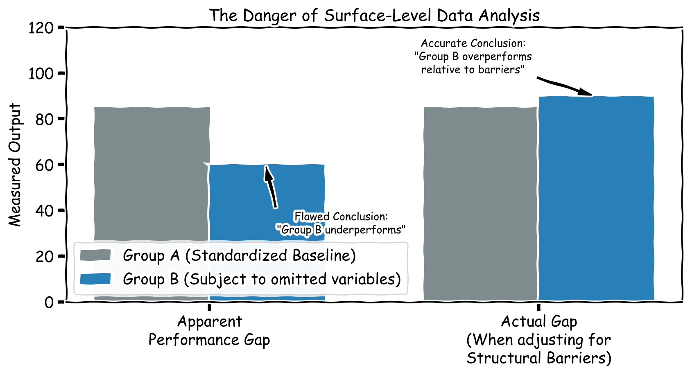

Context, Interpretation, and the Subjectivity of Variables
Author
Your Name
Introduction: From Raw Numbers to Meaning
A number is just a data point. But if you add context, then the data starts to make sense. This process of making raw data meaningful is called data analysis.
Data analysis refers to the process of examining raw data to extract meaningful insights that can guide decision-making. The goal of data analysis is to derive conclusions that help solve problems, answer questions, or achieve strategic objectives.
This process is particularly important for businesses and institutions because it helps them understand trends, predict outcomes, and respond proactively to challenges, ensuring they stay competitive and aligned with their goals.
The 5-Step Data Analysis Process
Transforming raw numbers into strategic action requires a systematic approach. Data analysts generally work through five strict steps to understand and make sense of data.
However, at each step, human choices are made. These choices determine the objectivity of the final result.
Step 1: Prepare for Analysis
The preparation step involves defining objectives, understanding the analysis needs, and creating a plan to ensure a smooth process. * Analytical Point of Attention: The objective defines the outcome. If the objective is solely to “maximize profit,” the subsequent analysis will systematically ignore variables related to employee well-being or environmental impact.
Step 2: Gather the Data
This step involves collecting the data needed (such as collecting survey responses or querying a database) to address the defined objectives. * Analytical Point of Attention: As seen in Module 1, if the data gathering methods exclude specific demographics, the entire analysis will be built on a structurally flawed foundation.
Step 3: Manipulate the Data
This step involves transforming and preparing the collected data for analysis. Common actions include: * Transforming data (cleaning, standardizing) * Removing duplicate records * Removing incomplete or sensitive data * Loading the data into a data warehouse * Analytical Point of Attention: “Standardizing” data often means forcing diverse inputs into narrow categories. Furthermore, automatically deleting “incomplete” records can inadvertently erase populations who were unable to perfectly fit the rigid database schema (Module 3).
Step 4: Analyze the Data
This step involves applying statistical techniques to the cleaned data to uncover patterns, trends, and insights. This includes quantitative analysis, statistical analysis, and data visualization. * Analytical Point of Attention: The choice of variables changes the result. If an analyst looks for a correlation between “Gender” and “Salary,” they will find a gap. If they add the variable “Unpaid Care Hours,” the context of that gap fundamentally changes.
Step 5: Interpret the Results
The final step involves making sense of the insights uncovered during the analysis, drawing conclusions, and making strategic recommendations.
Case Study: Interpreting the Results (The Gym Scenario)
To understand Step 5, let us look at a standard business scenario involving an analyst named Sophia.
1. Draw Conclusions Sophia reviews the visuals she created from her gym’s membership database. The bar graph shows a consistent decline in membership renewals. The pie chart reveals that younger members are renewing less frequently. Finally, the word cloud from the exit surveys highlights concerns such as ‘boring’ and ‘dull’.
Sophia concludes that the primary challenge is a lack of appeal for younger members, who find the current classes unexciting and outdated.
2. Make Recommendations To address the identified issues, Sophia recommends: * Incorporating newer, more trendy workout options that appeal to younger audiences. * Elevating the class atmosphere by playing upbeat music tracks during sessions.
The Bias of Interpretation: Sophia’s analysis is logical based on the variables she focused on. However, interpretation is inherently subjective. What if the classes aren’t inherently “dull,” but younger members simply have less disposable income this year and are using “boring” as a socially acceptable excuse to cancel? By interpreting the data strictly as an entertainment problem rather than a pricing or economic problem, the business strategy may fail.
Applied Data Analysis: Gender EDA (Exploratory Data Analysis)
To illustrate how critical variable selection and context are, below is an extract from an actual Exploratory Data Analysis focusing on gender representation.
Notice how applying a critical lens to the variables fundamentally changes the narrative of the raw numbers.
[INSTRUCTOR NOTE: INSERT YOUR PERSONAL EDA IMAGES AND ANALYSIS HERE]
Figure 1: Initial distribution of the dataset, highlighting the baseline demographic split.
Figure 2: Cross-referencing primary outcomes with specific, often overlooked variables to reveal hidden structural disparities.
Key EDA Findings: 1. [Insert your first EDA finding here] 2. [Insert your second EDA finding here]
Visualizing the Impact of Bias in Analysis
When data analysis lacks diverse variable selection, it produces “actionable insights” that are mathematically correct but objectively false in the real world. The following chart illustrates how ignoring a key variable (like systemic bias or structural barriers) completely flips the conclusion of an analysis.
Code
import matplotlib.pyplot as pltimport numpy as npwith plt.xkcd(): fig, ax = plt.subplots(figsize=(9, 5))# Data for the chart categories = ['Apparent\nPerformance Gap', 'Actual Gap\n(When adjusting for\nStructural Barriers)']# Values group_A = [85, 85] # Dominant group remains constant group_B = [60, 90] # Underrepresented group shifts when context is added x = np.arange(len(categories)) width =0.35# Create grouped bar chart bars1 = ax.bar(x - width/2, group_A, width, label='Group A (Standardized Baseline)', color='#7f8c8d') bars2 = ax.bar(x + width/2, group_B, width, label='Group B (Subject to omitted variables)', color='#2980b9')# Annotations ax.annotate('Flawed Conclusion:\n"Group B underperforms"', xy=(0.17, 60), xytext=(0.4, 30), arrowprops=dict(facecolor='black', shrink=0.05, width=1.5, headwidth=6), fontsize=10, ha='center') ax.annotate('Accurate Conclusion:\n"Group B overperforms\nrelative to barriers"', xy=(1.17, 90), xytext=(0.8, 100), arrowprops=dict(facecolor='black', shrink=0.05, width=1.5, headwidth=6), fontsize=10, ha='center')# Formatting ax.set_ylabel('Measured Output') ax.set_title('The Danger of Surface-Level Data Analysis', fontsize=15) ax.set_xticks(x) ax.set_xticklabels(categories) ax.set_ylim(0, 120) ax.legend(loc='lower left') plt.tight_layout() plt.show()

How Omitted Variables Change the Conclusion
Case Study: Interpreting the Results (The Gym Scenario)
To understand Step 5, let us look at a standard business scenario involving a membership database.
1. Draw Conclusions The data analyst reviews the generated visuals from the gym’s database. A bar graph shows a consistent decline in membership renewals. A pie chart reveals that younger members are renewing less frequently. Finally, a word cloud generated from exit surveys highlights recurring terms such as ‘boring’ and ‘dull’.
Based strictly on these variables, the analyst concludes that the primary challenge is a lack of appeal for younger members, who find the current classes unexciting and outdated.
2. Make Recommendations To address the identified issues, the recommended strategy includes: * Incorporating newer, more trendy workout options that appeal to younger audiences. * Elevating the class atmosphere by playing upbeat music tracks during sessions.
The Bias of Interpretation: This analysis is logically sound based only on the selected variables. However, interpretation remains inherently subjective. What if the classes are not inherently “dull,” but younger members simply have less disposable income this year, using “boring” as a socially acceptable excuse to cancel? By interpreting the text data strictly as an entertainment problem rather than exploring economic variables, the resulting business strategy may fail.
The Value of Analysis over Mere Collection
Collecting data on every customer interaction or operational process is an essential first step, but it does not guarantee a foolproof strategy for future success.
Simply gathering data without systematically analyzing and interpreting it leads to vast data warehouses full of missed opportunities.
To truly harness the power of data, organizations must apply critical insights to understand behavior, identify underlying trends, and make informed decisions. It is the careful, context-aware analysis and interpretation of the data that transforms raw numbers into actionable information. This allows businesses and institutions to develop strategies that are both proactive and adaptable, ensuring long-term success rather than merely repeating past patterns.
By transforming raw data into actionable, contextualized information, data analysis drives actual improvements.
Next Chapter
Proceeding to Module 6
Once data has been extracted, cleaned, and analyzed to understand the present, the next objective for data scientists is to use that information to forecast the future.
In the next module, we will explore the mechanisms of predictive modeling and machine learning, and examine how mathematical predictions systematically encode historical data into future outcomes.
---title: "Module 5: What is Data Analysis?"subtitle: "Context, Interpretation, and the Subjectivity of Variables"author: "Your Name"format: html: toc: true toc-depth: 3 theme: cosmo code-fold: showexecute: warning: false message: falsejupyter: python3---# Introduction: From Raw Numbers to MeaningA number is just a data point. But if you add context, then the data starts to make sense. This process of making raw data meaningful is called **data analysis**.Data analysis refers to the process of examining raw data to extract meaningful insights that can guide decision-making. The goal of data analysis is to derive conclusions that help solve problems, answer questions, or achieve strategic objectives. This process is particularly important for businesses and institutions because it helps them understand trends, predict outcomes, and respond proactively to challenges, ensuring they stay competitive and aligned with their goals.---# The 5-Step Data Analysis ProcessTransforming raw numbers into strategic action requires a systematic approach. Data analysts generally work through five strict steps to understand and make sense of data. However, at each step, human choices are made. These choices determine the objectivity of the final result.### Step 1: Prepare for AnalysisThe preparation step involves defining objectives, understanding the analysis needs, and creating a plan to ensure a smooth process. * **Analytical Point of Attention:** The objective defines the outcome. If the objective is solely to "maximize profit," the subsequent analysis will systematically ignore variables related to employee well-being or environmental impact. ### Step 2: Gather the DataThis step involves collecting the data needed (such as collecting survey responses or querying a database) to address the defined objectives.* **Analytical Point of Attention:** As seen in Module 1, if the data gathering methods exclude specific demographics, the entire analysis will be built on a structurally flawed foundation.### Step 3: Manipulate the DataThis step involves transforming and preparing the collected data for analysis. Common actions include:* Transforming data (cleaning, standardizing)* Removing duplicate records* Removing incomplete or sensitive data* Loading the data into a data warehouse* **Analytical Point of Attention:** "Standardizing" data often means forcing diverse inputs into narrow categories. Furthermore, automatically deleting "incomplete" records can inadvertently erase populations who were unable to perfectly fit the rigid database schema (Module 3).### Step 4: Analyze the DataThis step involves applying statistical techniques to the cleaned data to uncover patterns, trends, and insights. This includes quantitative analysis, statistical analysis, and data visualization.* **Analytical Point of Attention:** The choice of variables changes the result. If an analyst looks for a correlation between "Gender" and "Salary," they will find a gap. If they add the variable "Unpaid Care Hours," the context of that gap fundamentally changes.### Step 5: Interpret the ResultsThe final step involves making sense of the insights uncovered during the analysis, drawing conclusions, and making strategic recommendations.---# Case Study: Interpreting the Results (The Gym Scenario)To understand Step 5, let us look at a standard business scenario involving an analyst named Sophia.**1. Draw Conclusions**Sophia reviews the visuals she created from her gym's membership database. The bar graph shows a consistent decline in membership renewals. The pie chart reveals that younger members are renewing less frequently. Finally, the word cloud from the exit surveys highlights concerns such as *‘boring’* and *‘dull’*.Sophia concludes that the primary challenge is a lack of appeal for younger members, who find the current classes unexciting and outdated.**2. Make Recommendations**To address the identified issues, Sophia recommends:* Incorporating newer, more trendy workout options that appeal to younger audiences.* Elevating the class atmosphere by playing upbeat music tracks during sessions.**The Bias of Interpretation:**Sophia's analysis is logical based on the variables she focused on. However, interpretation is inherently subjective. What if the classes aren't inherently "dull," but younger members simply have less disposable income this year and are using "boring" as a socially acceptable excuse to cancel? By interpreting the data strictly as an entertainment problem rather than a pricing or economic problem, the business strategy may fail. ---# Applied Data Analysis: Gender EDA (Exploratory Data Analysis)To illustrate how critical variable selection and context are, below is an extract from an actual Exploratory Data Analysis focusing on gender representation.*Notice how applying a critical lens to the variables fundamentally changes the narrative of the raw numbers.*::: {.callout-tip appearance="minimal"}**[INSTRUCTOR NOTE: INSERT YOUR PERSONAL EDA IMAGES AND ANALYSIS HERE]***Figure 1: Initial distribution of the dataset, highlighting the baseline demographic split.**Figure 2: Cross-referencing primary outcomes with specific, often overlooked variables to reveal hidden structural disparities.***Key EDA Findings:**1. [Insert your first EDA finding here]2. [Insert your second EDA finding here]:::---# Visualizing the Impact of Bias in AnalysisWhen data analysis lacks diverse variable selection, it produces "actionable insights" that are mathematically correct but objectively false in the real world. The following chart illustrates how ignoring a key variable (like systemic bias or structural barriers) completely flips the conclusion of an analysis.```{python}#| label: analysis-bias-comic#| fig-cap: "How Omitted Variables Change the Conclusion"#| echo: trueimport matplotlib.pyplot as pltimport numpy as npwith plt.xkcd(): fig, ax = plt.subplots(figsize=(9, 5))# Data for the chart categories = ['Apparent\nPerformance Gap', 'Actual Gap\n(When adjusting for\nStructural Barriers)']# Values group_A = [85, 85] # Dominant group remains constant group_B = [60, 90] # Underrepresented group shifts when context is added x = np.arange(len(categories)) width =0.35# Create grouped bar chart bars1 = ax.bar(x - width/2, group_A, width, label='Group A (Standardized Baseline)', color='#7f8c8d') bars2 = ax.bar(x + width/2, group_B, width, label='Group B (Subject to omitted variables)', color='#2980b9')# Annotations ax.annotate('Flawed Conclusion:\n"Group B underperforms"', xy=(0.17, 60), xytext=(0.4, 30), arrowprops=dict(facecolor='black', shrink=0.05, width=1.5, headwidth=6), fontsize=10, ha='center') ax.annotate('Accurate Conclusion:\n"Group B overperforms\nrelative to barriers"', xy=(1.17, 90), xytext=(0.8, 100), arrowprops=dict(facecolor='black', shrink=0.05, width=1.5, headwidth=6), fontsize=10, ha='center')# Formatting ax.set_ylabel('Measured Output') ax.set_title('The Danger of Surface-Level Data Analysis', fontsize=15) ax.set_xticks(x) ax.set_xticklabels(categories) ax.set_ylim(0, 120) ax.legend(loc='lower left') plt.tight_layout() plt.show()```# Case Study: Interpreting the Results (The Gym Scenario)To understand Step 5, let us look at a standard business scenario involving a membership database.**1. Draw Conclusions**The data analyst reviews the generated visuals from the gym's database. A bar graph shows a consistent decline in membership renewals. A pie chart reveals that younger members are renewing less frequently. Finally, a word cloud generated from exit surveys highlights recurring terms such as *‘boring’* and *‘dull’*.Based strictly on these variables, the analyst concludes that the primary challenge is a lack of appeal for younger members, who find the current classes unexciting and outdated.**2. Make Recommendations**To address the identified issues, the recommended strategy includes:* Incorporating newer, more trendy workout options that appeal to younger audiences.* Elevating the class atmosphere by playing upbeat music tracks during sessions.**The Bias of Interpretation:**This analysis is logically sound based *only* on the selected variables. However, interpretation remains inherently subjective. What if the classes are not inherently "dull," but younger members simply have less disposable income this year, using "boring" as a socially acceptable excuse to cancel? By interpreting the text data strictly as an entertainment problem rather than exploring economic variables, the resulting business strategy may fail. ---## The Value of Analysis over Mere CollectionCollecting data on every customer interaction or operational process is an essential first step, but it does not guarantee a foolproof strategy for future success.Simply gathering data without systematically analyzing and interpreting it leads to vast data warehouses full of missed opportunities.To truly harness the power of data, organizations must apply critical insights to understand behavior, identify underlying trends, and make informed decisions. It is the careful, context-aware analysis and interpretation of the data that transforms raw numbers into actionable information. This allows businesses and institutions to develop strategies that are both proactive and adaptable, ensuring long-term success rather than merely repeating past patterns.By transforming raw data into actionable, contextualized information, data analysis drives actual improvements.---## Next Chapter::: {.callout-note}## Proceeding to Module 6Once data has been extracted, cleaned, and analyzed to understand the present, the next objective for data scientists is to use that information to forecast the future.In the next module, we will explore the mechanisms of predictive modeling and machine learning, and examine how mathematical predictions systematically encode historical data into future outcomes.[Module 6: Predictions in Data](../06-predictions/index.qmd):::
 Figure 1: Initial distribution of the dataset, highlighting the baseline demographic split.
Figure 1: Initial distribution of the dataset, highlighting the baseline demographic split. Figure 2: Cross-referencing primary outcomes with specific, often overlooked variables to reveal hidden structural disparities.
Figure 2: Cross-referencing primary outcomes with specific, often overlooked variables to reveal hidden structural disparities.